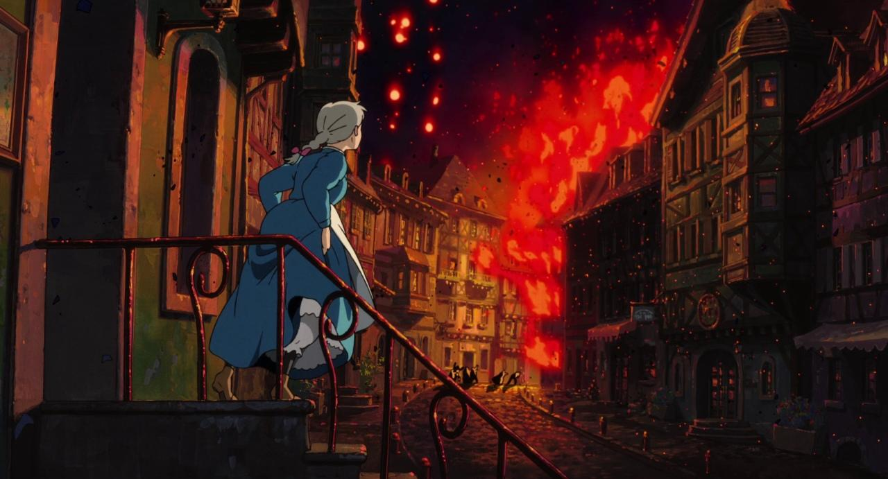
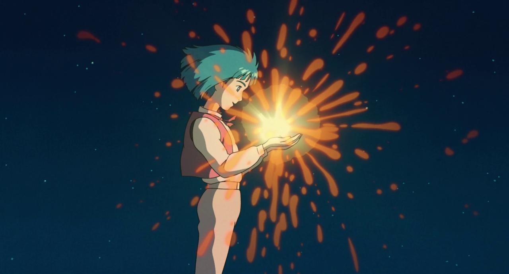

Rédigé par Marina Meloni • 2 min 30 de lecture
Dans le monde enchanté du "Château Ambulant" de Hayao Miyazaki, une distribution de personnages divers et mémorables prend le devant de la scène. Parmi eux, Calcifer, le feu qui parle, se distingue comme l'une des figures les plus énigmatiques et intrigantes de l'histoire. Mais qu'est-ce qui fait parler ce feu, et comment ce phénomène se rapporte-t-il à l'intrigue générale ?
La capacité de Calcifer à parler est intrinsèquement liée au cœur du château, et par extension, à Howl lui-même. Calcifer est, en essence, le cœur vivant et le moteur de la forteresse ambulante. Cette connexion magique est établie à travers un contrat mystérieux qui lie Calcifer à Howl, et par conséquent, au château. C'est ce contrat qui non seulement maintient le château en mouvement, mais accorde également à Calcifer le pouvoir de la parole et de la conscience.
Le cœur du château, représenté par Calcifer, encapsule la dualité de la magie et de la technologie qui imprègne toute l'histoire. Alors que Calcifer est un être magique, sa profonde compréhension de la machinerie complexe du château souligne la fine ligne entre les deux. Cette juxtaposition reflète le thème plus large du film : la coexistence de la magie et de la technologie dans un monde ravagé par la guerre.
Photo tirée du film, Sophie face à la guerre.
Le rôle de Calcifer dans l'intrigue va au-delà de celui d'une simple source de chaleur et d'énergie. Il est essentiel pour la profondeur émotionnelle de l'histoire, représentant à la fois les fardeaux et les sacrifices que les individus consentent dans la poursuite de leurs objectifs. Sa lutte constante pour maintenir le château en mouvement au détriment de sa propre existence reflète le thème plus vaste du sacrifice personnel pour une cause plus grande, un thème qui résonne tout au long du film.
La relation entre Calcifer et Howl ajoute une couche supplémentaire de complexité à l'histoire. Le comportement espiègle et parfois effronté de Calcifer sert de contrepoids à la personnalité plus sérieuse et sombre de Howl. Leur dynamique fournit non seulement des moments de légèreté, mais met également en lumière l'importance de tisser des liens et de se soutenir mutuellement face à l'adversité.
L'arc narratif du personnage de Calcifer, bien que subtil, est poignant. Son désir de se libérer du contrat et de vivre la liberté souligne le thème plus large de la libération personnelle et de la rupture des chaînes. Il sert de rappel que même dans les circonstances les plus magiques, les personnages aspirent à l'autodétermination et à une vie qui leur est propre.
Photo tirée du film, Howl enfant rencontrant Calcifer.
En conclusion, Calcifer, le feu qui parle, est un personnage qui enrichit la narration du Château Ambulant de nombreuses manières. Sa connexion avec le cœur du château, la juxtaposition de la magie et de la technologie, et sa dynamique avec Howl contribuent tous à la profondeur et à la complexité du film. De plus, son personnage est grandement apprécié par les fans, en particulier pour son apparence mignonne et sa personnalité amusante.
prochain article